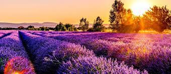
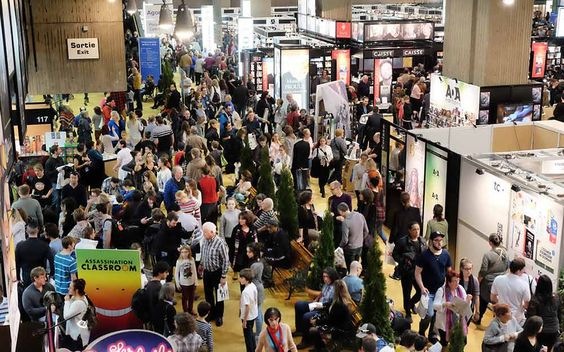
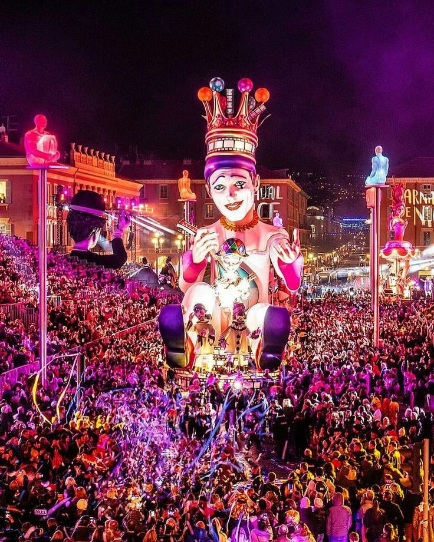
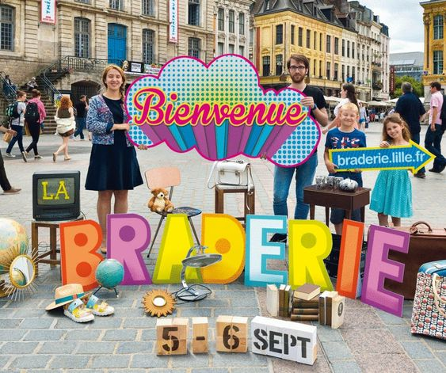
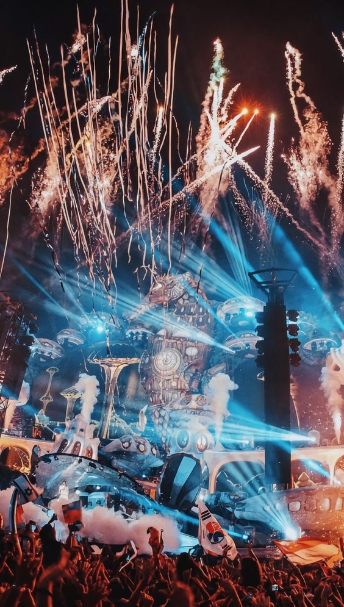
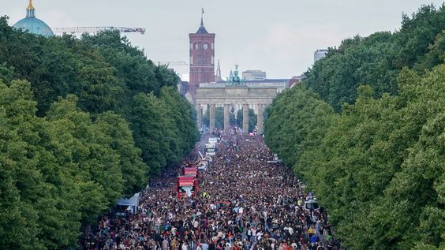

FRANCE
Let's Travel The World!
Les Fêtes de la Lavande: Ce festival met à l’honneur les arts de la rue parisiens tels que la magie, la danse, le chant, les expositions de marionnettes, le théâtre, etc. Du 21 octobre 2023 au 25 février 2024, c’est à ce moment-là que cela se produira.

MIF Expo - Le salon du Made in France: Il s’agit d’un salon professionnel qui présente des produits fabriqués en France, notamment la mode, l’alimentation et les articles pour la maison. Il aura lieu du 10 au 13 novembre 2023, à Paris.

Artistes de rue: Paris est connue pour ses artistes de rue, que l’on trouve dans toute la ville. Il s’agit notamment de musiciens, de danseurs et d’autres artistes qui divertissent les foules dans les rues.

Calendrier des événements gratuits à Paris: Paris has a program of free activities that includes outdoor movie screenings, festivals, concerts, and other cultural gatherings. The International Documentary Film Festival, the Salon du Livre de Paris, and the Festival d'Automne à Paris are just a few of the events that will happen starting in November.

Le Carnaval de Nice: Chaque année, Nice, en France, accueille le Carnaval de Nice, l’un des carnavals les plus connus au monde. C’est une occasion lumineuse et colorée. Il comprend des défilés extravagants avec d’énormes chars, des batailles de fleurs et des costumes accrocheurs. Des milliers de personnes se rendent sur la Côte d’Azur pour cet événement dynamique, qui offre une exposition époustouflante d’art et de culture.

Jours fériés et festivals à venir en France :
Braderie de Lille: La Braderie de Lille est le plus grand marché aux puces d’Europe, où des millions de personnes se rassemblent pour faire du shopping, manger et se délecter du carnaval de rue animé.
Lieu : Ville de Lille

le Festival Musica: Le Festival Musica est un festival de musique classique contemporaine renommé qui se tient chaque année à Strasbourg, en France, et qui présente des compositions innovantes et avant-gardistes.
Lieu:Strasbourg,France

Technoparade: La Technoparade est un défilé de musique électronique dynamique en France, où les fêtards dansent dans les rues de la ville sur des rythmes techno.
Lieu:Paris,France
